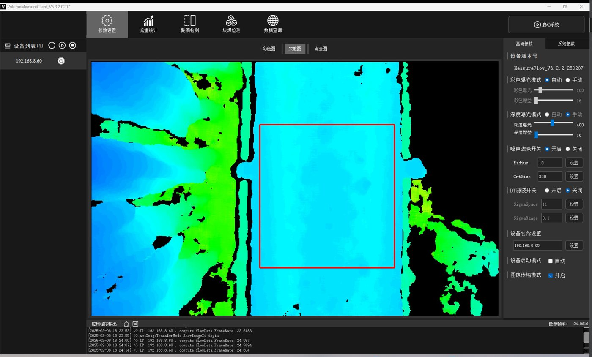
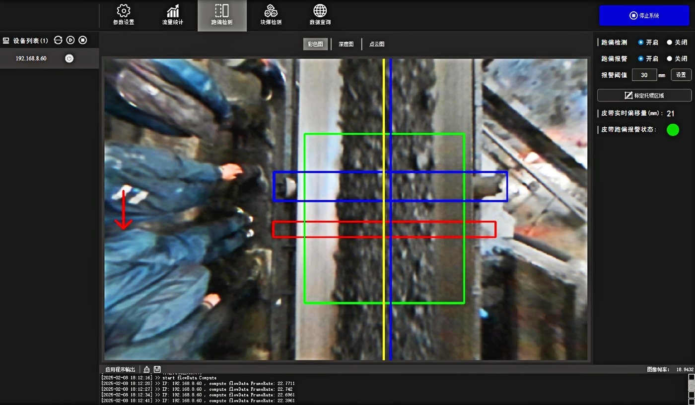

3D
双目深度感知
利用空间深度信息区分方向和目标，适配常见出入口环境。
硬件负责稳定感知，平台负责汇总、对比和输出运营洞察。
利用空间深度信息区分方向和目标，适配常见出入口环境。
围绕客流和空间行为进行统计，不把身份识别作为产品前提。
支持门店、区域和时间维度汇总，并按项目对接业务系统。
实际覆盖范围、安装高度和接口以项目勘察与规格书为准。
| 能力 | 说明 | 项目确认项 |
|---|---|---|
| 进出方向统计 | 按入口统计进入、离开与净客流 | 入口宽度、安装高度、遮挡情况 |
| 区域占用 | 按时间观察空间使用变化 | 区域划分、数据频次与保存周期 |
| 平台看板 | 门店、区域、时段趋势与对比 | 组织权限、指标口径与报表需求 |
| 系统对接 | 按项目提供数据接口 | 协议、认证、频率与网络环境 |
用真实产品图说明硬件形态，避免抽象科技背景抢占信息。



客流统计应明确采集内容、保存周期、权限和输出口径。
以统计和空间分析为目的，不将身份信息作为默认输出。
按集团、区域和门店配置数据访问范围。
在项目启动前确认入口、去重、员工过滤和报表口径。
提供入口数量、宽度、安装高度和希望关注的运营指标，我们将给出设备与平台建议。